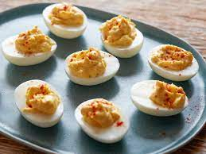

Deviled Eggs

Description
An easy to make appetizer
Ingredients
- 6 large eggs hard-cooked
- 1/4 cup mayonnaise
- 1 teaspoon dijon mustard
- 1 teaspoon cider vinegar
Steps
-
Cut eggs in half and pop out yolks into a resealable
food-safe plastic bag.
-
Add remaining ingredients to the bag and mix together.
-
Cut off a bottom corner of the bag and pipe the mixture into
the egg whites.